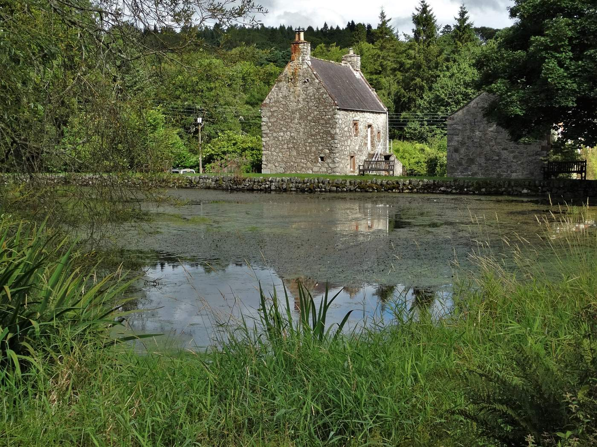
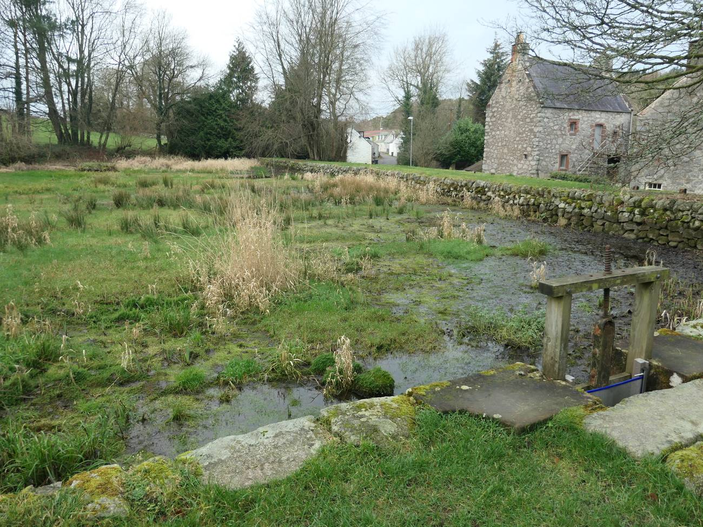

Four rooms, and where they are in the building
A mill is a stack of working floors, so the rooms are stacked too. Which floor a room is on decides its stairs, its noise, its warmth and its view — more than anything else about it does.
The mill's year
Choosing a month here is not the same as choosing a month at a hotel. The lade decides whether the wheel turns, and the latitude decides how much of the day you get.


| Month | Daylight | The lade | The wheel | Milling | From | What it is like |
|---|
Nights and enquiries
Nights still free
| Room | Nights free | Which |
|---|
Each mark is one night: filled is free, pale is taken. The month runs left to right from the 1st.